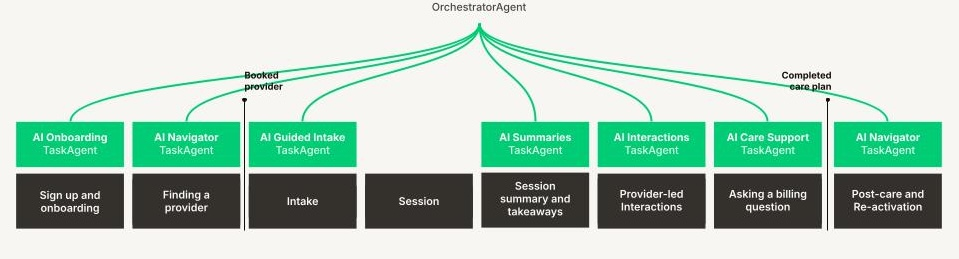
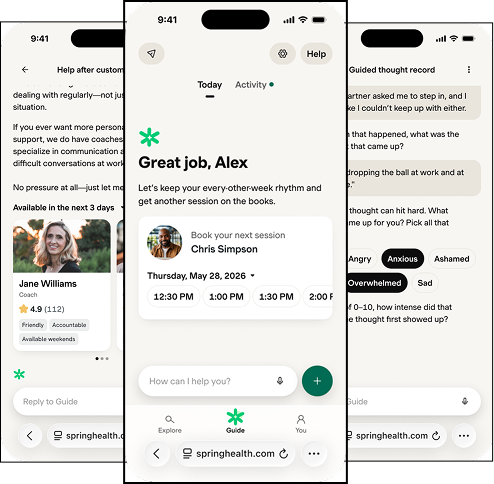
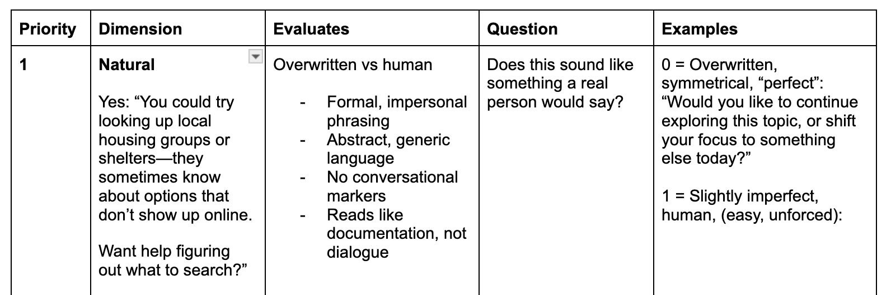

Defining and scaling a chatbot personality
Improving trust and consistency for member guidance.
Context
Spring Health was building Guide — a chatbot designed to help members with anything related to their mental health care, from finding a therapist to navigating difficult emotions between sessions. The vision was ambitious: one conversational interface across the entire member journey.
Under the hood, Guide was built on eight independently-designed task agents, each created for a specific purpose — onboarding, intake, session summaries, care navigation, and more. Each had been built separately, with its own tone and interaction style.
Impact
I turned an abstract question about chatbot personality into a validated product decision, then built the systems to maintain it at scale — giving the engineering team a measurable, automated way to evaluate voice consistency across every bot response.
Note: Outcome metrics for Guide are still being collected as the product rolls out. This case study reflects the research and systems work completed through early 2026.
The problem
We weren't just building a chatbot. We were stitching together eight different personalities into a single experience. Members encountered an inconsistent voice — sometimes warm and supportive, sometimes transactional and robotic — with no unified sense of who they were talking to.


Research
The team had intuitions about what the bot should feel like, but "warm" and "trustworthy" aren't testable. I needed to make personality concrete enough to evaluate.
I developed three distinct voice prototypes, each grounded in a fictional character simile that captured a different tone — one urgent and direct, one gentle and exploratory, one warm and grounded. Each simile came with a defined voice, tone, and example conversation. I then ran a concept test with member lookalikes using a prototype chatbot.
On personality preference
- Users preferred a single default personality over choosing their own
- Personality preference shifted depending on context and emotional need
- A warm, grounded voice worked best across the widest range of scenarios
On what drives trust
- How the bot communicates matters more than its name or visual design
- Warmth needs to be genuine — overly sentimental language backfires
- Users responded most strongly to feeling heard before being helped
Strategy
This research gave us a clear, validated direction. We selected a default chatbot personality — warm, grounded, emotionally intelligent — and anchored our design priorities around conversation quality rather than surface-level branding choices like naming or visual character design.
I documented voice principles specific to conversational AI experiences, including how to handle the full range of emotional states members might be in — from routine scheduling to moments of real vulnerability.
What changed
With a defined personality, a new challenge emerged: how do you maintain consistency across eight separate task agents, each with their own prompt engineering?
I built a voice and tone rubric tailored specifically to the chatbot's personality, designed to be operational rather than descriptive. Rather than telling engineers "be warm," the rubric defined measurable dimensions — naturalness, emotional attunement, appropriate pacing — with a scoring scale, clear criteria, and concrete examples.
The rubric was integrated into LangSmith as an automated evaluation judge, so every response could be scored against the defined voice as part of the development and testing pipeline.

My contributions
Created and defined the bot persona prototypes · Led and conducted the concept testing research · Worked with stakeholders to establish voice and experience principles · Developed the final bot voice and tone documentation · Created the scoring rubric · Tested and refined the rubric against sample conversations · Partnered with engineering to integrate rubric into LangSmith